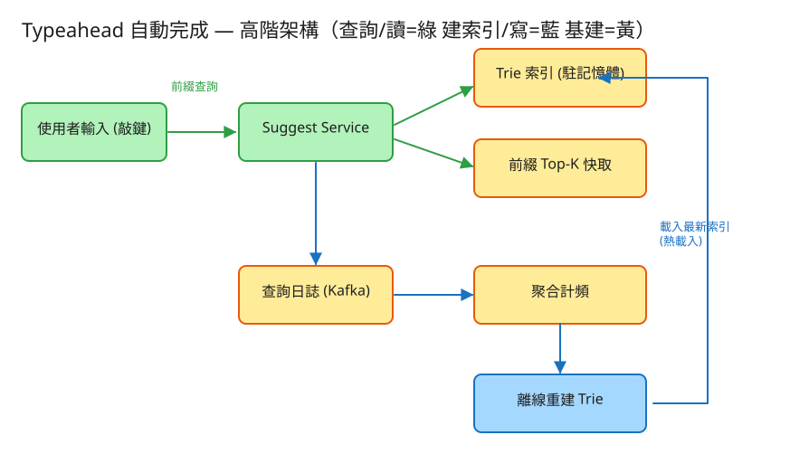

G 搜尋/索引 看故事就懂 輕鬆讀 25 分鐘
你在 Google、YouTube、蝦皮的搜尋框打字，還沒打完，下面就「啪」地跳出一排建議： 你打「自」，它馬上列出「自動完成」「自助餐」「自行車」。而且這排建議，是大家最常搜的那幾個， 排在最上面的就是最熱門的。
這就是 Typeahead（自動完成）。它的難，難在三點：你每按一個鍵就要回一次（超高頻）、 要在幾毫秒內回完（不然你已經打下一個字了）、而且要照熱門程度排好（最多人搜的排前面）。
很多人第一個疑問是：「全世界有上億條搜尋詞，我打一個字，它怎麼可能瞬間就從上億條裡挑出最熱門那幾個？」 關鍵在兩個你早就懂的生活經驗——
把這兩個合起來，就是這題的靈魂：打字 → 沿字典樹走到那個前綴節點（很快，只走幾步）→ 直接讀出那個節點上事先貼好的熱門排行榜（不用現算）。所以才能秒回。
💭 停一下：為什麼一定要「事先算好」？當場現算不行嗎？
別被「系統」嚇到。整件事其實就是闖 3 關，一關一關來：
第一步，把所有人搜過的詞，照字典樹（Trie）的方式擺好——就像英文字典按字母分層。
👉 重點：打前綴就是「從樹根照著字往下走」。打「自動」就走到「自→動」那個節點。走到哪，就代表你打了哪個前綴。
光有字典樹還不夠——走到「自」這個節點，下面可能有上百萬個「自開頭」的詞。當場排序太慢。
這個「每個前綴最熱門的前幾名」就叫 Top-K（K 通常是 5 到 10）。 它是事先算好的：依照「大家搜過幾次」（歷史頻率）排出來，存在每個節點上。
⚠️ 小細節：這些榜怎麼算？由下往上合併——先算好底層每個詞的熱度， 再把子節點的榜往上合，每往上一層就取「合起來後最熱的前 K 名」。建好後，查詢就只是「走過去、讀牌子」。
前面兩關都是事先準備。真正使用者打字時，做的事極簡單：
這就是為什麼工程上說它的查詢速度是「O(前綴長度)」： 白話講就是「只跟你打了幾個字有關，跟總共有幾百萬個詞完全無關」。打 2 個字就走 2 步，這麼簡單。
工程上的「取捨」聽起來很抽象。換個方式記：這個系統最怕三件事，每個設計都是為了避開某個「怕」。

✏️ 用 Excalidraw 開啟編輯（diagram.excalidraw）白話導讀，分成「平常線上秒回」和「背後默默更新」兩條線：
關鍵：線上那棵樹是唯讀的、只負責秒回；更新榜的髒活全在背後離線做，永遠不拖慢你打字。
看完上面，這些詞你其實都已經懂了，這裡只是把「工程術語 ↔ 白話」對起來，Part 2 會用到：
| 工程術語 | 白話解釋 |
|---|---|
| Trie（字典樹） | 像英文字典「按字母一層一層分下去」的樹，打前綴就走到那個節點 |
| 前綴（prefix） | 你打了一半的字，例如「自動」 |
| 節點（node） | 字典樹上的一個「路口」，對應一個前綴 |
| Top-K | 每個前綴「最熱門的前 K 名」排行榜（K 約 5~10） |
| O(前綴長度) | 查詢快慢只跟「你打幾個字」有關，跟總詞數無關 |
| 頻率 / 熱度 | 這個詞「被大家搜過幾次」，用來排榜 |
| 讀重型 | 查詢（讀）遠多於更新（寫），這題讀是寫的數百倍 |
| 離線重建 | 背後定時把整棵樹重蓋一次、重算榜，再換上線 |
| 近即時更新 | 對爆紅的詞做「小補丁」，幾分鐘就進榜 |
| 分片（Sharding） | 樹太大裝不下，就切開放到多台機器 |
| 快取 (Cache) | 把超熱前綴的答案另外存一份，命中就更快 |
| QPS | 每秒幾筆請求（衡量「多忙」的單位） |
| API | 系統之間講好的「點餐單」格式：你給我什麼、我回你什麼 |
| debounce（防抖） | 你連打很快時，前端「等你停半拍」才送一次，少打擾後端 |
我們估幾個關鍵數字（數字不必背，重點是感受它的「形狀」）：
| 估什麼 | 大概數字 | 所以呢？ |
|---|---|---|
| 每天多少次搜尋 | ~5 億次/日（約每秒 6000 次） | 本身就不少 |
| 每秒多少次「打字查詢」 | 每次搜尋平均敲 6 鍵，每鍵一查 → 每秒約 3.5 萬次（尖峰再 ×3 ≈ 10 萬） | 打字查詢是搜尋的好幾倍，極度繁忙 |
| 總共多少種詞 | 去重後約 1 億條獨特查詢詞 | 字典樹會很大 |
| 字典樹多大 | 壓縮後數 GB ~ 數十 GB | 還塞得進記憶體（這很重要） |
💭 停一下：既然「讀」這麼多、「寫」這麼少，這給了我們什麼設計上的好處？
這題只要記住兩張「點餐單」：
① 取得建議（讀，超高頻，最關鍵的那條路）
GET /api/v1/suggest?q=自&limit=10
給我：你打的前綴「自」、想要幾筆
我回：{ 前綴:"自", 建議:[ {詞:"自動完成", 熱度:98213},
{詞:"自助餐", 熱度:41020}, ... ] }這條路每秒被打幾萬次，所以它必須超快、可以「多開幾台一起扛」（無狀態），答案還能短暫快取一下。它就是整個系統的命脈。
② 回報「被選中」（寫，只是記一筆，慢慢處理）
POST /api/v1/select Body: { 詞:"自動完成" }
我回：202「收到了！」← 立刻回，不馬上改榜為什麼「立刻回 202、不馬上改榜」？因為改榜是背後離線慢慢做的髒活。 使用者選了什麼，我們只先記一筆日誌，絕不在你打字的關鍵路徑上去動那棵樹——就像餐廳收下你的意見卡，但不會當場停下來重排菜單。
每個節點記三樣：往下的分岔（children）、這裡是不是一個完整的詞（isWord）、這個前綴的 Top-K 榜。
每次「被搜 / 被選中」就append 一筆：詞、時間、地區…。
它只負責「忠實記下發生了什麼」，不負責即時算榜。寫起來超快，因為只是往後面加一行。
把上面的流水帳聚合成：詞（主鍵）、頻率（被搜幾次）。
可以做「時間衰減」——讓最近的搜尋加重、老掉的搜尋慢慢退場，這樣榜才會反映「現在的熱門」。重蓋字典樹時就照這張表排榜。
| 哪裡會塞車 | 怎麼拓寬 |
|---|---|
| 查詢時當場翻子樹、排序 | 節點預存 Top-K 榜，查詢降到「走過去讀榜」（O(前綴長度)） |
| 每按一鍵一次請求，量暴衝 | 建議服務無狀態、多開幾台分攤 + 前端 debounce（停半拍才送） |
| 上億詞的樹一台記憶體裝不下 | 依前綴首字分片到多台（a–f 一台、g–m 一台…）+ 索引壓縮 |
| 「a」「自」等超短前綴流量全擠一處 | 那台多放幾份副本 + 在邊緣/CDN 快取熱門建議 |
| 爆紅熱詞太慢進榜 | 離線整批重建（穩）＋ 串流小補丁（快）雙軌並用 |
「Part 1 的三個怕」是核心取捨。這裡補幾個常被面試官追問的：
/u 旗標把字串切成一個個字元來處理。讀十遍不如玩一遍。這題有一個真的可以跑的小程式，讓你親眼看到「字典樹 + 熱門榜 + 頻率改變排名」：
# 啟動（在這題的 demo 資料夾裡）
cd demo
php -S localhost:8016 -t public
# 然後瀏覽器打開 http://localhost:8016玩過 demo 了，來掀開引擎蓋看看「那三關到底是哪幾段程式做的」。 好消息：核心只有三個小檔，剛好對應前面講的工作。不用會 PHP，我把程式翻成白話、只留關鍵那幾行，看註解就懂。
第一關，把每個詞照字元一個一個往下走擺進樹裡。走到沒有的岔路就長一個新節點，走到底就在那個節點蓋章「這裡是一個完整的詞」。
function 插入(詞, 熱度) {
節點 = 樹根
for (詞裡的每一個字 之 字) { // ★ 中文用「字元」為單位切，不是位元組
if (節點底下沒有 字 這條岔路)
節點.分岔[字] = 新節點() // ← 沒路就長一條新的
節點 = 節點.分岔[字] // 往下走一步
}
節點.是一個詞 = true // 走到底：這裡是完整的詞
節點.熱度 = 熱度
}「貓」「貓咪」「貓砂」都先走過同一個「貓」節點——共用開頭就共用同一段路，這就是 Trie 省空間的關鍵。打前綴時也是用同一招「照字往下走」，走到哪就代表你打了哪個前綴。
第二關是全題的靈魂：在每一個節點事先算好「從這往下走，最熱門的前 K 名」，貼在節點上。算法是由下往上合併——先算好子節點的榜，再把它們合起來取前 K 名：
function 算這個節點的榜(節點) {
候選 = []
if (節點.是一個詞) 候選.加入({ 節點.詞, 節點.熱度 })
for (節點的每個子節點 之 子) {
子榜 = 算這個節點的榜(子) // ← 先把底下的榜算好（後序：先子後父）
候選.加入(子榜全部)
}
節點.榜 = 候選照熱度由高到低排序後.取前K名 // ★ 合併後只留前 K 名貼在節點上
return 節點.榜
}⚠️ 注意是後序（先把子節點的榜都算好，再合出自己的）。每個節點只留 K 名（K 約 5~10），不會把整棵子樹都背在身上。建好後，那塊牌子就一直掛在路口等人來讀。
💭 停一下：為什麼要「由下往上」算，而不是每個節點各自從頭把子樹翻一遍？
前面兩關都是事先準備。使用者真正打字時，做的事極簡單：照前綴走到那個節點，把貼在上面的榜直接讀出來就回。
function 給建議(前綴) {
節點 = 照前綴一個字一個字走到對應節點 // 走不到 → 沒有詞以此開頭，回空
if (節點 不存在) return []
return 節點.榜 // ★ 直接讀預存的 Top-K，不現算、不排序
}關鍵就在最後那行：不翻子樹、不排序，直接讀。所以無論底下有 100 個還是 100 萬個詞都一樣快——這就是前面說的 O(前綴長度)：只跟你打幾個字有關，跟總詞數無關。
你點了一個建議，等於它「被選一次」。它的熱度 +1，而且要讓下次查同前綴時排名馬上反映——所以只重算這個詞會影響到的那幾個榜：
function 被選中(詞) {
沿路收集 = 照詞一個字一個字走，把沿途節點記成一條鏈
if (走不到 或 終點不是一個詞) return null
終點.熱度 = 終點.熱度 + 1 // ← 熱度 +1
for (這條鏈 由下往上 之 節點)
算這個節點的榜(節點) // ★ 只重算「這個詞的每個前綴」那幾塊榜
return 終點.熱度
}為什麼只重算這一條鏈？因為「自動完成」變熱，只會影響「自」「自動」「自動完」…這幾個前綴的榜，其他路口完全沒被碰到，不用動。改完，再查「自」就會看到它往上爬了——這正是 demo 裡「點一下就爬榜」的真相。
| 關卡（前面講的） | 哪個檔 | 關鍵那段 |
|---|---|---|
| ① 建字典樹（按字母分層） | Trie | 插入() 的「照字往下走」 |
| ② 每個前綴預貼熱門榜（Top-K） | Suggester | 算這個節點的榜()（由下往上合） |
| ③ 打字秒回（走過去讀榜） | Suggester | 給建議() 直接讀 節點.榜 |
| （加碼）頻率改變排名 | Suggester | 被選中() 熱度 +1 + 重算前綴鏈 |
👉 重點：真實系統會把「JSON 檔 + 駐記憶體 Trie」換成壓縮 Trie（FST/Radix Tree）放分片伺服器、把「就地重算」換成背後離線管線重建 + 串流補丁、把詞頻表搬到外部儲存， 但上面這幾段邏輯——「照前綴走過去」＋「節點預存 Top-K」——一字都不用改。所以讀懂這個小 demo，你就讀懂了這題的核心。
先不要看答案，自己用講給朋友聽的方式回答看看（講得出來才是真的懂）：
自動完成 = 你打前幾個字，我秒猜出大家最常搜的那幾個。
3 個關卡：① 把詞照字典樹按字母分層擺好 → ② 每個前綴節點事先貼好熱門榜（Top-K） → ③ 打字就走過去讀榜，秒回（速度跟總詞數無關）。
3 個怕：怕慢（事先算好榜、查詢只讀）、怕榜跟不上熱點（重建＋補丁雙軌）、怕裝不下或擠一處（分片＋熱前綴多副本）。
工程細節一句話：它是極端「讀重型」→ 用「點餐單(API)」溝通，選中只回 202、記一筆日誌 → 一棵唯讀字典樹（節點預存 Top-K）＋背後兩本帳（日誌/詞頻）離線重建 → 找出塞車環節各自拓寬。
想看更精簡、面試速查用的版本？👉 前往完整版（同樣內容的工程速查格式）。